Bringing clarity to complex financial products.
7+ years designing wealth, onboarding, and compliance products across crypto and fintech — research first, measured after launch. Resume →
Crypto & compliance

Owned the Assets line on App and Web for institutional and HNW clients — one portfolio across crypto and US/HK securities, with Homepage for overall performance and Assets for holdings.
- Design 50%
- AI prototyping 50%

Replaced a text-heavy KYB flow with guided selection and a document checklist — designed in two weeks against research showing 82% of users submitted multiple applications.
- Research 20%
- Design 60%
- Measurement 20%
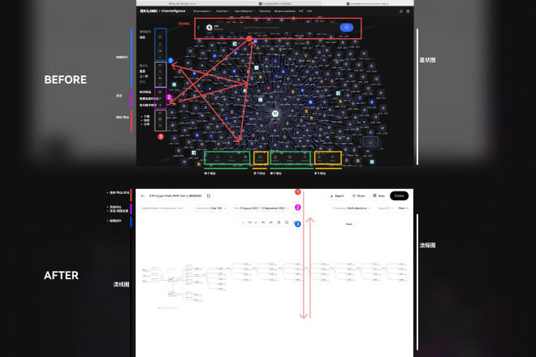
Revamped the transaction-investigation flow — analyst interviews mapped to a redesigned graph view, evidence panel, and case-notes module.
- Research 30%
- Design 60%
- Measurement 10%

0→1 client onboarding for two regulated launches — AUSTRAC for Australia and MiCA for Europe — balancing requirements with usable consumer flows.
- Design 100%
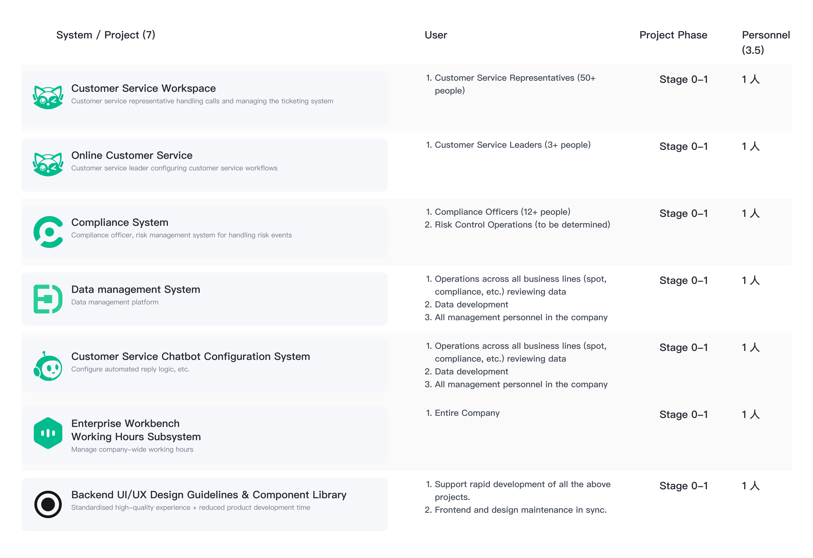
Discovery, IA, and component design across compliance, customer service, and operations tools — partnered with engineering under tight regulatory deadlines.
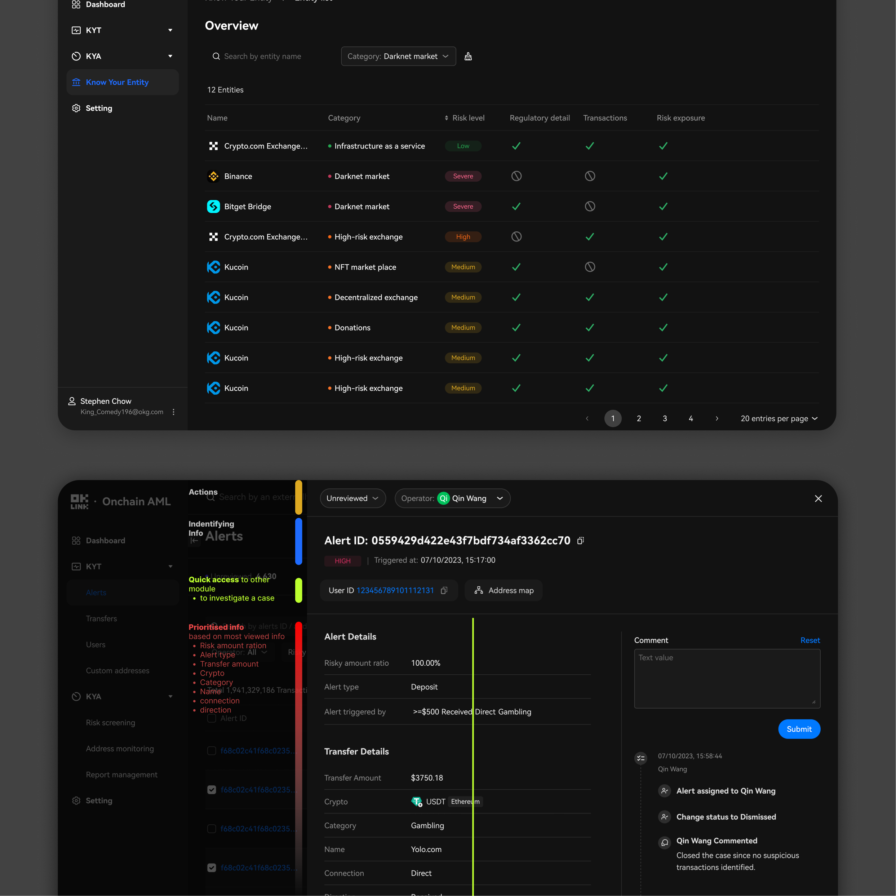
Designed the on-chain transaction risk module from analyst interviews — surfacing the signals that drive a flag, not just the data behind them.

Outlined the risks behind a token in plain language and at-a-glance signals, helping retail users avoid losses on volatile assets.
Fintech & wealth management

The B2B tool banks such as HSBC, DBS and MUFG use to run model-portfolio investing. I owned all six modules, led the dashboard pattern shared by three products, and rebuilt the design system underneath.
- Research 40%
- Design 40%
- Usability test 20%
Leadership & strategy

Defined the metrics, events, and dashboards we needed to track user experience as a first-class product signal — partnering with data and PM.

Built a structured rubric and interview format to bring fairness and consistency to design hiring at the company.
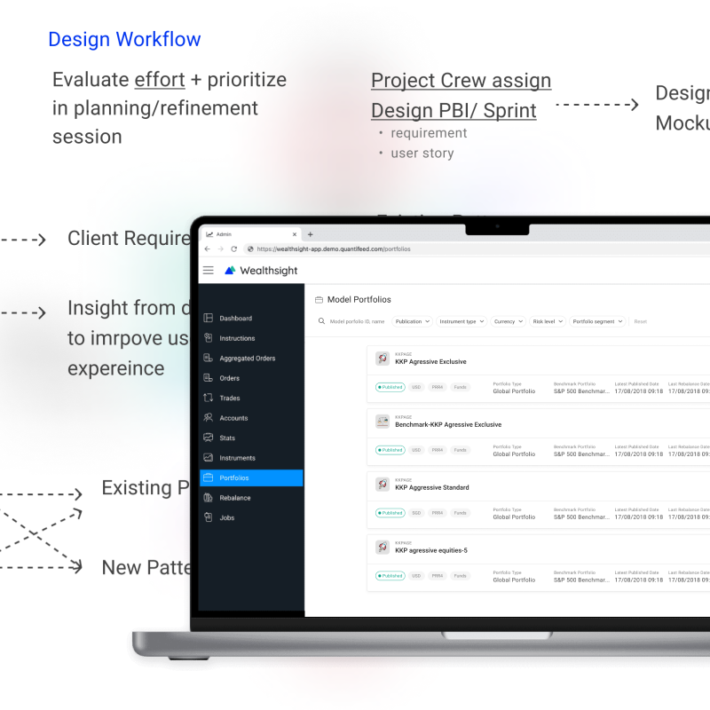
Mapped the handoff between design, product, and engineering, then established a workflow and review rituals that stuck.
Other product work
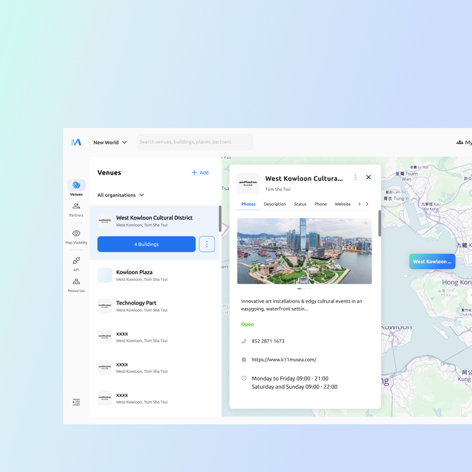
From blank page to shippable MVP — defined the editor canvas, layer model, and review workflow with two engineers.

Led UX for a scalable agent-application flow — working with research, BAs, engineering and the design-system owner from invite through submission.
- Research 30%
- Design 60%
- Usability test 10%
Research & academia

Three robotic lights that follow or guide people through sequential tasks — exploring which factors shape the perception of "smartness".
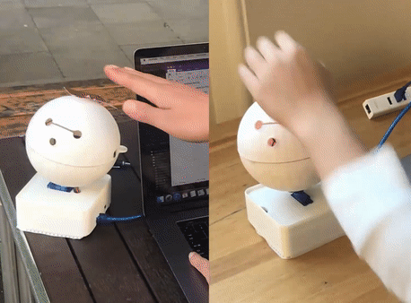
Two bots that exchange touch warmth across distance and turn toward the sender's voice when receiving a message.

Explored intuitive ways to interact with 3D data on a multi-surface setup — Unity prototype, elicitation study, and literature review.
Additional & earlier work
Earlier and smaller-scope projects — included for context and range.


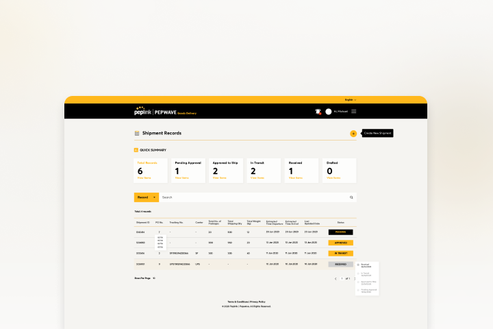
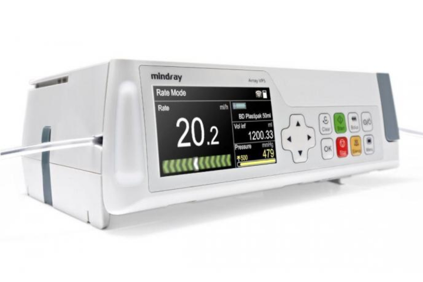
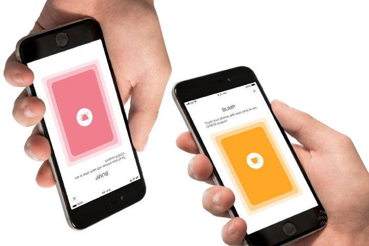
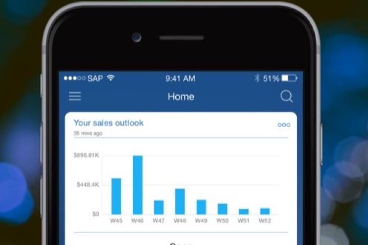
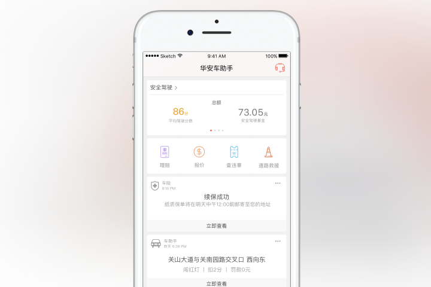
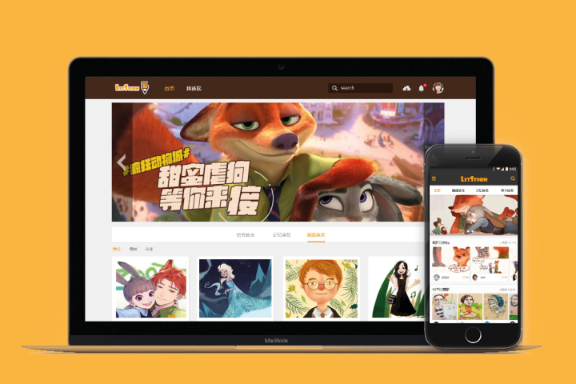